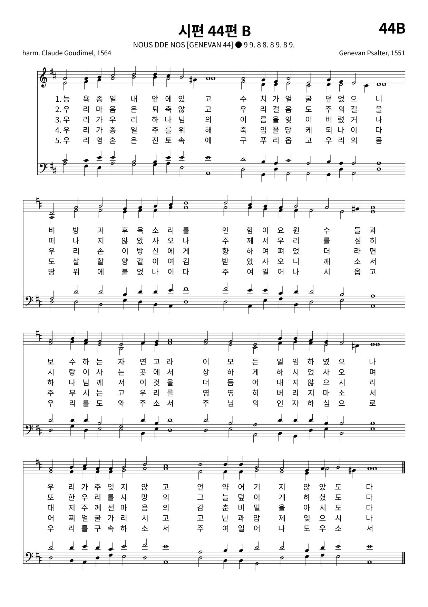

Psalm 44B
NOUS DDE NOS [GENEVAN 44] · 9 9. 8 8. 8 9. 8 9.
English title: Our Ears Have Heard It, God of Glory
Tune: Genevan Psalter, 1551 · Harmony: Claude Goudimel, 1564 · Lyrics: Korean adaptation of Psalm 44 from the Korean Revised Version (AI draft adaptation · not yet theologically reviewed) · 5 stanzas
Psalm 44 is divided into 2 tunes: A B · This tune contains stanzas 6–10 of the Psalm 44 lyrics.
Score PDF MusicXML (for printing) MusicXML (for accompaniment, with prelude and repeats) Read Psalm 44 (Korean Revised Version)
Score
← Psalm 44A ListAccompaniment (in preparation)Psalm 45 →
Lyrics (Korean)
Stanza 1
능욕 종일 내 앞에 있고
수치가 얼굴 덮었으니
비방과 후욕 소리를
인함이요 원수들과
보수하는 자 연고라
이 모든 일 임하였으나
우리가 주 잊지 않고
언약 어기지 않았도다
능욕 종일 내 앞에 있고
수치가 얼굴 덮었으니
비방과 후욕 소리를
인함이요 원수들과
보수하는 자 연고라
이 모든 일 임하였으나
우리가 주 잊지 않고
언약 어기지 않았도다
Stanza 2
우리 마음은 퇴축 않고
우리 걸음도 주의 길을
떠나지 않았사오나
주께서 우리를 심히
시랑이 사는 곳에서
상하게 하시었사오며
또한 우리를 사망의
그늘 덮이게 하셨도다
우리 마음은 퇴축 않고
우리 걸음도 주의 길을
떠나지 않았사오나
주께서 우리를 심히
시랑이 사는 곳에서
상하게 하시었사오며
또한 우리를 사망의
그늘 덮이게 하셨도다
Stanza 3
우리가 우리 하나님의
이름을 잊어 버렸거나
우리 손 이방 신에게
향하여 펴었더라면
하나님께서 이것을
더듬어 내지 않으시리
대저 주께선 마음의
감춘 비밀을 아시도다
우리가 우리 하나님의
이름을 잊어 버렸거나
우리 손 이방 신에게
향하여 펴었더라면
하나님께서 이것을
더듬어 내지 않으시리
대저 주께선 마음의
감춘 비밀을 아시도다
Stanza 4
우리가 종일 주를 위해
죽임을 당케 되나이다
도살할 양같이 여김
받았사오니 깨소서
주무시는고 우리를
영영히 버리지 마소서
어찌 얼굴 가리시고
고난과 압제 잊으시나
우리가 종일 주를 위해
죽임을 당케 되나이다
도살할 양같이 여김
받았사오니 깨소서
주무시는고 우리를
영영히 버리지 마소서
어찌 얼굴 가리시고
고난과 압제 잊으시나
Stanza 5
우리 영혼은 진토 속에
구푸리옵고 우리의 몸
땅 위에 붙었나이다
주여 일어나시옵고
우리를 도와 주소서
주님의 인자하심으로
우리를 구속하소서
주여 일어나 도우소서
우리 영혼은 진토 속에
구푸리옵고 우리의 몸
땅 위에 붙었나이다
주여 일어나시옵고
우리를 도와 주소서
주님의 인자하심으로
우리를 구속하소서
주여 일어나 도우소서